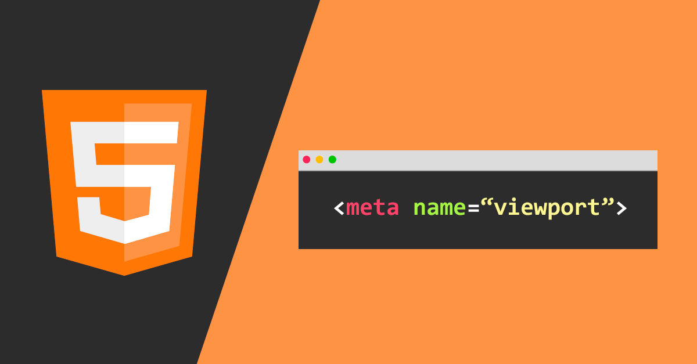

El disseny web responsive tracta de crear pàgines web que s'adaptin i es vegin bé en tots els dispositius.
The Viewport
El Viewport és una de les etiquetes més representatives del web mòbil, que ens permet configurar com el navegador d'interpretar una pàgina web per a mòbils.
Com funciona i aplicar-lo
Al afegir l'etiqueta viewport, la pàgina web s'adaptarà a la resolució de la pantalla.
meta name="viewport" content="width=device-width, initial-scale=1.0

Media Query
Regles introduïdes en CSS per definir mides a objectes perquè s'apliquin en diferents mides de pantalla.
Com funciona i aplicar-lo
Al afegir els estils en CSS, modifiquem estils segons valors que escrivim. @media screen and (max-width: 225px){ .contenido { background-color: #FFFFFF; }